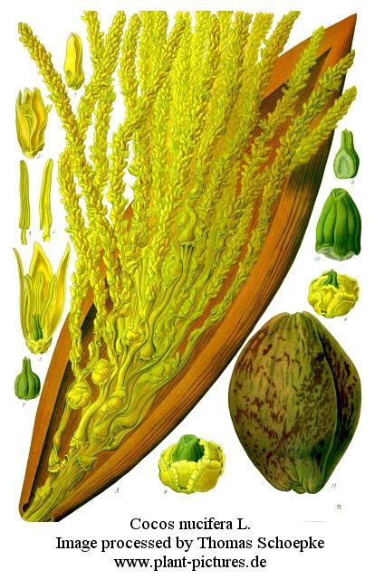

HABIT & HABITAT:

A tall and stately palm growing
to a height of 80 ft. or more when fully mature, bearing a crown of large, pinnate
leaves. The trunk is stright or gently curved.
It is most widely cultiveted in tropics. It thrives best within the tropic zone.
The major coconut areas lie between 20°N. and 20° S., on both sides of
equador. It is distributed in India near sea coasts, largely cultivated in India
, Burma and Ceylon.Athough it is found beyond this region, as far as 27° N
and 27° S., cultivation in these regions has not been successful. The most
important coconut producing countries in the world are India, Malaya, Indonesia,
Philippines and South sea islands in Pacific. In India, the bulk of the acreage
under coconut is concentrated in the coastal and deltaic regions of S-India. The
principal areas of cultivation in India are Travancore & Cochin, Malabar,
S and N Kanara, East Godavari and Tanjore, Puri and Cuttaack in Orissa, Ratnagiri
in Bombay and Mysore, Tumkur and Hassan in Karnatak
Availability :
Status :
Back to Top
DIAGNOSTIC FEATURES

The trunk is stout (1-1.5 ft. dia.) stright or gently curved rising from a swollen
base surrounded by a mass of roots; rarely branched, it is marked by ring like
leaf scars which are not prominnt. the leaves are 6-18 ft. long, narrow and
tapering. In the axil o each leaf is a spathe encloing a spadix, 4-6 ft. long,
stout, straw or ornage coloured and simply branched.
Back to Top
REPRODUCTIVE BIOLOGY
The palm is monoecious. The female flowers
are relatively few, 1 in. long and globose, borne at the base of the panicle.
The male flowers are numerous, small and sweet scented, borne towads the top
of the panicle.
Breeding System :
Phenology :
Pollinators:
Seed Biology :
Seed Germination:
Cultivation:Climate and Soil:
The primary requirements for the successful cultivation of coconut palm are: hot
tropical climate, abundant rainfall and well-drained soil. Sea shores, river banks
and hill slopes in the tropics afford ideal situations. It thrives best in regions
with a maximum temperature of 85° F and a diurnal variation of 12° F.
The palm prefers a well distributed rainfall of 50-90 in. per annum. it can tolerate
considerably higher precipitations if the soil is well drained. the palm prefers
a light, well drained soil permitting free root development and aeration and does
best on alluvial and sandy soils near the coast.
Back to Top
MAJOR PESTS & DISEASES
Pests:
Diseases:
Back to Top